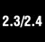

7.6. Set TypesIn mathematics, a set is any collection of distinct items, and its members are often referred to as set elements. Python captures this essence in its set type objects. A set object is an unordered collection of hashable values. Yes, set members would make great dictionary keys. Mathematical sets translate to Python set objects quite effectively and testing for set membership and operations such as union and intersection work in Python as expected. Like other container types, sets support membership testing via in and not in operators, cardinality using the len() BIF, and iteration over the set membership using for loops. However, since sets are unordered, you do not index into or slice them, and there are no keys used to access a value. There are two different types of sets available, mutable (set) and immutable (frozenset). As you can imagine, you are allowed to add and remove elements from the mutable form but not the immutable. Note that mutable sets are not hashable and thus cannot be used as either a dictionary key or as an element of another set. The reverse is true for frozen sets, i.e., they have a hash value and can be used as a dictionary key or a member of a set. Sets became available in Python 2.3 via the sets module and accessed via the ImmutableSet and Set classes. However, it was decided that having them as built-in types was a better idea, so these classes were then ported to C along with some improvements and integrated into Python 2.4. You can read more about those improvements as well as set types in general in PEP 218 at http://python.org/peps/pep-0218.html.  Although sets are now an official Python type, they have often been seen in many Python applications (as user-defined classes), a wheel that has been reinvented many times over, similar to complex numbers (which eventually became a Python type way back in 1.4). Until current versions of Python, most users have tried to shoehorn set functionality into standard Python types like lists and dictionaries as proxies to a real set type (even if they were not the perfect data structure for their applications). Now users have more options, including a "real" set type. Before we go into detail regarding Python set objects, we have to mentally translate the mathematical symbols to Python (see Table 7.3) so that we are clear on terminology and functionality.
How to Create and Assign Set TypesThere is no special syntax for sets like there is for lists ( [ ] ) and dictionaries ( { } ) for example. Lists and dictionaries can also be created with their corresponding factory functions list() and dict(), and that is also the only way sets can be created, using their factory functions set() and frozenset(): >>> s = set('cheeseshop')
>>> s
set(['c', 'e', 'h', 'o', 'p', 's'])
>>> t = frozenset('bookshop')
>>> t
frozenset(['b', 'h', 'k', 'o', 'p', 's'])
>>> type(s)
<type 'set'>
>>> type(t)
<type 'frozenset'>
>>> len(s)
6
>>> len(s) == len(t)
True
>>> s == t
FalseHow to Access Values in SetsYou are either going to iterate through set members or check if an item is a member (or not) of a set: >>> 'k' in s False >>> 'k' in t True >>> 'c' not in t True >>> for i in s: ... print i ... c e h o p s How to Update SetsYou can add and remove members to and from a set using various built-in methods and operators: >>> s.add('z')
>>> s
set(['c', 'e', 'h', 'o', 'p', 's', 'z'])
>>> s.update('pypi')
>>> s
set(['c', 'e', 'i', 'h', 'o', 'p', 's', 'y', 'z'])
>>> s.remove('z')
>>> s
set(['c', 'e', 'i', 'h', 'o', 'p', 's', 'y'])
>>> s -= set('pypi')
>>> s
set(['c', 'e', 'h', 'o', 's'])As mentioned before, only mutable sets can be updated. Any attempt at such operations on immutable sets is met with an exception: >>> t.add('z')
Traceback (most recent call last):
File "<stdin>", line 1, in ?
AttributeError: 'frozenset' object has no attribute 'add'How to Remove Set Members and SetsWe saw how to remove set members above. As far as removing sets themselves, like any Python object, you can let them go out of scope or explicitly remove them from the current namespace with del. If the reference count goes to zero, then it is tagged for garbage collection. >>> del s
>>> |